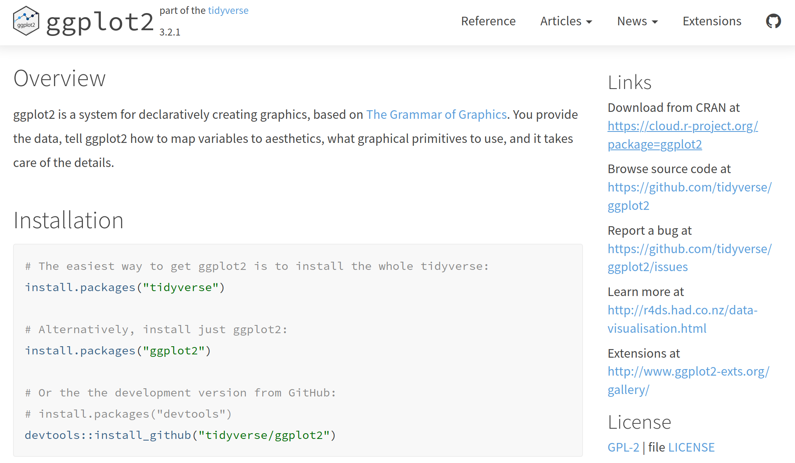
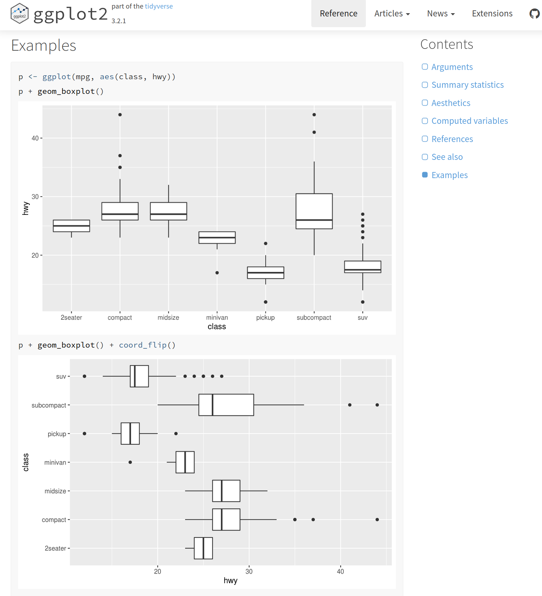
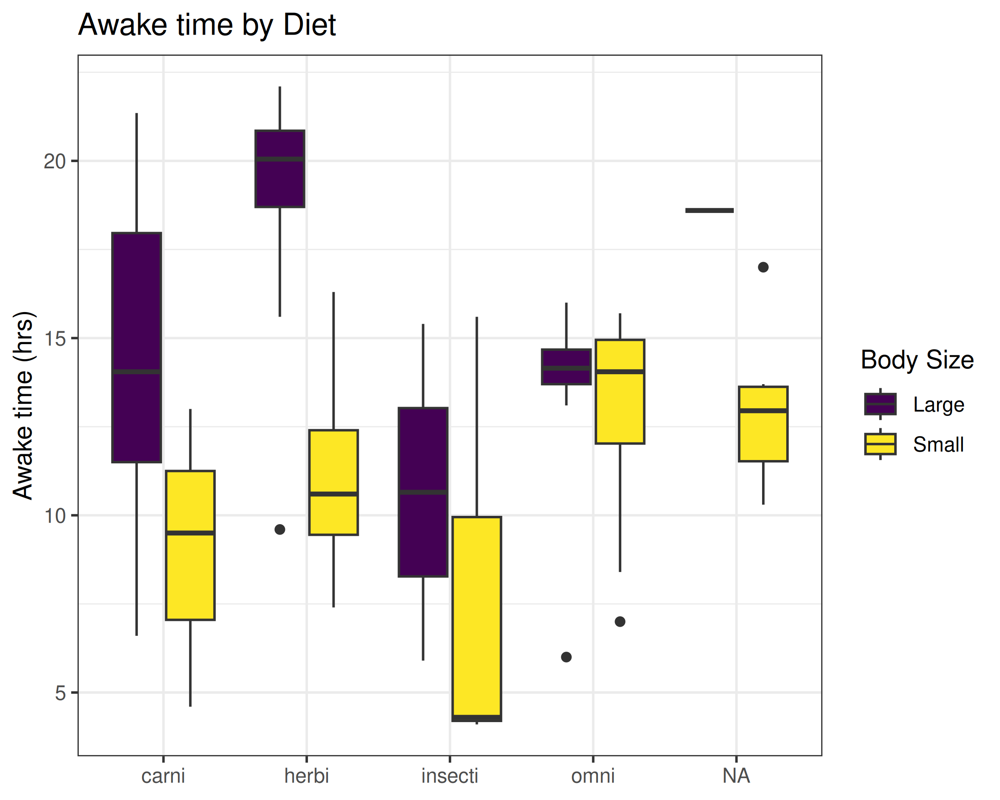

Error: object 'a' not foundWorkshop: Dealing with Data in R
Getting Help with R
After this workshop
steffilazerte
@steffilazerte@fosstodon.org
@steffilazerte
steffilazerte.ca

Compiled: 2025-01-12
First things first
Save previous script
Consider taking notes during this section
Artwork by @allison_horst
Troubleshooting
Artwork by @allison_horst
Bit by bit
Line by line
- R is sequential
- If you skip lines, you’re not running that part (and R has no idea)
Bit by bit
Line by line
library(tidyverse)
# Load Data
size <- read_csv("./data/grain_size2.csv")
# First modification
size <- mutate(size,
total_sand = coarse_sand + medium_sand + fine_sand,
total_silt = coarse_silt + medium_silt + fine_silt)
# Second modification
size <- size |>
group_by(plot) |>
summarize(n = n(),
total_sand = sum(total_sand),
mean_sand = mean(total_sand),
sd_sand = sd(total_sand),
se_sand = sd_sand / sqrt(n))Especially important if loading and modifying data
Can’t run 1st modification
after 2nd modification
Bit by bit
Section by section
library(tidyverse)
size <- read_csv("./data/grain_size2.csv") |>
mutate(total_sand = coarse_sand + medium_sand + fine_sand,
total_silt = coarse_silt + medium_silt + fine_silt) |>
group_by(plot) |>
summarize(n = n(),
total_sand = sum(total_sand),
mean_sand = mean(totall_sand),
sd_sand = sd(total_sand),
se_sand = sd_sand / sqrt(n))Error in `summarize()`:
ℹ In argument: `mean_sand = mean(totall_sand)`.
ℹ In group 1: `plot = "CSP01"`.
Caused by error:
! object 'totall_sand' not foundBit by bit
Section by section
No error
No error
Bit by bit
Section by section
size <- read_csv("./data/grain_size2.csv") |>
mutate(total_sand = coarse_sand + medium_sand + fine_sand,
total_silt = coarse_silt + medium_silt + fine_silt) |>
group_by(plot) |>
summarize(n = n(),
total_sand = sum(total_sand),
mean_sand = mean(totall_sand),
sd_sand = sd(total_sand),
se_sand = sd_sand / sqrt(n))Error in `summarize()`:
ℹ In argument: `mean_sand = mean(totall_sand)`.
ℹ In group 1: `plot = "CSP01"`.
Caused by error:
! object 'totall_sand' not foundAh ha!
Bit by bit
Applies to error messages too
- First, don’t panic!
- Look at the error bit by bit
Error: Problem with `summarise()` column `mean_sand`.
ℹ `mean_sand = mean(totall_sand)`.
x object 'totall_sand' not found
ℹ The error occurred in group 1: plot = "CSP01".Bit by bit
Applies to error messages too
Error: Problem with 'summarise()' column 'mean_sand'`Okay, we know the problem is in the summarize() part and then mean_sand part of that
ℹ 'mean_sand = mean(totall_sand)'
x object 'totall_sand' not foundLooks like this is the line with the problem.
And the problem is object 'totall_sand' not found.
Ooops! Typo!
ℹ The error occurred in group 1: plot = "CSP01".Lastly, it’s telling us that the problem was when working with this group of data.
(This can be useful when troubleshooting, because you can filter() your data and take a look)
Artwork by @allison_horst
R is never wrong
Just sometimes unhelpful!
Getting Help
Cheat Sheets
RStudio Menu
- Help
- Cheatsheets
Take a look yourself
Vignettes
Many packages come with vignettes (tutorials)
List Vignettes
Vignettes in package ‘ggplot2’:
ggplot2-specs Aesthetic specifications (source, html)
extending-ggplot2 Extending ggplot2 (source, html)
profiling Profiling Performance (source, html)Tutorials
Vignettes are also online
Organizations/Websites

Books!
Free Online
- R for Data Science (read it!)
- R Graphics Cookbook (how to do X)
ggplot2(next level)- Data Visualization: A practical introduction
- Geocomputation with R (spatial, GIS, maps)
- Statistical Inference via Data Science: A ModernDive into R and the tidyverse (stats)
Communities!
- rOpenSci
- Social Media
- #RStats Twitter
- #RStats Mastodon (e.g., Fosstodon.org or Hachyderm.io)
- Data Carpentry Lessons
- R4DS Online learning community on Slack
(ask any question, they’re really nice!)
Specific Groups


Specific help
Examples
In R
Copy and paste the examples into your console
Examples
On the web
- Nice to see expected output
- Helps figure out if it’s your system or your code

Web searches
- Always include “R” in the search
- Include the package name!
- Use keywords
- Some errors are very general
Web searches
- Always include “R” in the search
- Include the package name!
- Try “R boxplots” vs. “R boxplots ggplot2”
- Use keywords
- Try “R boxplots ggplot2 notch”
- Some errors are very general
- Try “R Error: object ‘m’ not found”
Stackoverflow etc.
Stackoverflow etc.
Things to consider
- Date (i.e., R version, Package Version)
- Packages used (
tidyverse? R base? A mix?) - What are the example data?
mtcarsandirisare commonly used data sets built into R basemsleepanddiamondsare commonly used data sets built intoggplot2
- What are the example columns?
- What is actually required to answer your question?
Asking for Help
Not useful
- “I got an error”
- “It didn’t work”
Better!
- “I got this error”
- “It didn’t give me this”
Best!!
- “I did this and I got this error”
- “I expected it to do this, but in fact the output was this”
Best of the Best!!!
- “I did this [small reproducible code, including data set] and I got this [exact error/output]”
Reproducible Examples
- Minimal code and data required to reproduce the error
- Often preparing this actually helps you solve the error!
- Includes
- packages (
library()) - data
- runnable code
- packages (
Reproducible Examples
How do I change the order of vore?
Not reproducible
ggplot(data = m, aes(x = vore, y = awake, fill = `Body Size`)) +
theme_bw() +
theme(axis.title.x = element_blank()) +
geom_boxplot() +
scale_fill_viridis_d() +
labs(y = "Awake time (hrs)",
title = "Awake time by Diet")Error: object 'm' not found- No indication of packages
- No indication of what
mis
Reproducible Examples
How do I change the order of vore?
Reproducible, but not minimal
library(ggplot2)
m <- msleep |>
mutate(`Body Size` = if_else(bodywt > median(bodywt),
"Large", "Small"))
ggplot(m, aes(x = vore, y = awake, fill = `Body Size`)) +
theme_bw() +
theme(axis.title.x = element_blank()) +
geom_boxplot() +
scale_fill_viridis_d() +
labs(y = "Awake time (hrs)",
title = "Awake time by Diet")
Reproducible Examples
How do I change the order of vore?
Reproducible AND Minimal
Paying it forward
Citing Software
In-line Text
- Software name
- Version
- Programmers/authors OR Journal article releasing the software (if available)
Bibliography
- Journal article releasing the program OR
- Programmers/authors
- Year of release
- Program Name
- URL
Citing R
Inline
“All statistical analyses were performed with R statistical software (v4.4.2, R Core Team 2024).”
Bibliography
R Core Team (2024). R: A Language and Environment for Statistical Computing. R Foundation for Statistical Computing, Vienna, Austria. https://www.R-project.org/.
Citing R
Version information
Citation information
To cite R in publications use:
R Core Team (2024). _R: A Language and Environment for Statistical
Computing_. R Foundation for Statistical Computing, Vienna, Austria.
<https://www.R-project.org/>.Citing R Packages
Inline
“All statistical analyses were performed with R statistical software (v4.0.3, R Core Team 2020). We performed Type III ANOVAs using the ‘car’ package for R (v3.0.10, Fox and Weisberg 2019).”
Bibliography
John Fox and Sanford Weisberg (2019). An R Companion to Applied Regression, Third Edition. Thousand Oaks CA: Sage.
Citing R Packages
Version information
Citation information
To cite the car package in publications use:
Fox J, Weisberg S (2019). _An R Companion to Applied Regression_,
Third edition. Sage, Thousand Oaks CA.
<https://www.john-fox.ca/Companion/>.See more about citing packages in my rOpenSci blog post: How to Cite R and R packages
Artwork by @allison_horst
You made it!
Thank you!
(Feedback!)